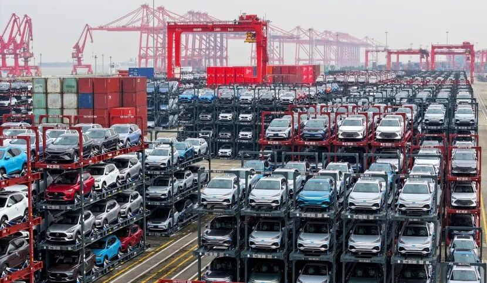
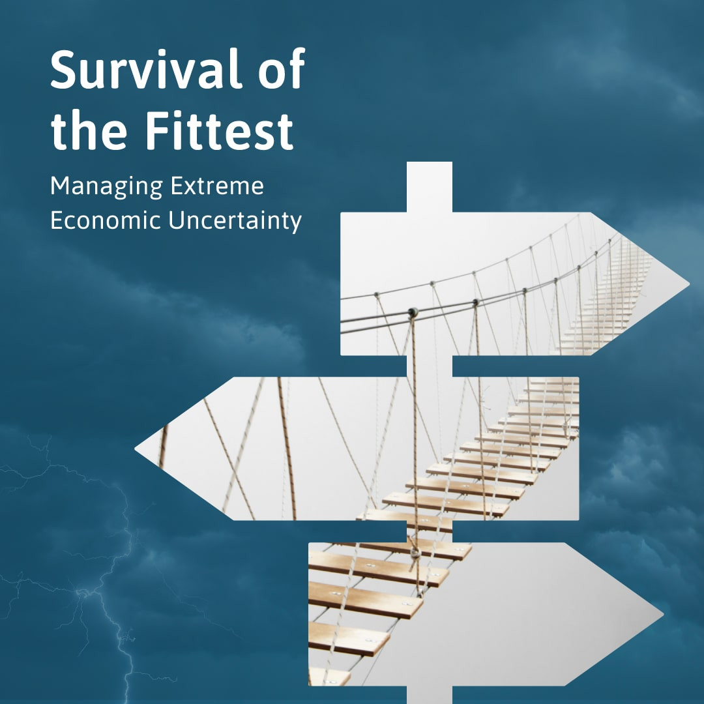
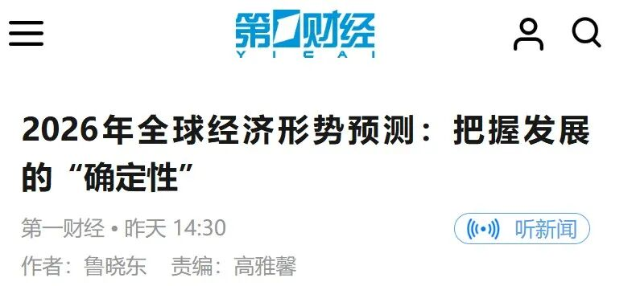

2025年很快就要过去了，那些在年初曾经困扰我们的不确定性在这一年里都变成了确定的事实。但是，站在2025年的年末，我们对于2026年全球经济走势依然充满了迷茫和疑惑。是的，时间是杀死不确定性最好的方法，但只要还有未来，不确定性将永远存在。
即将过去的2025年的世界经济仍然延续了“弱复苏+高不确定”的主旋律。IMF在2025年10月发布的《世界经济展望》预计，全球经济增速将自2024年的3.3%小幅放缓至2025年的3.2%，并在2026年进一步降至3.1%，其中发达经济体增长中枢在1.5%左右，新兴经济体略高于4%。OECD最新一期的《经济展望》也给出类似判断：预测全球经济增速将从去年的3.3%放缓至2025年和2026年的2.9%；世界银行则强调，预计全球经济在未来两年趋于稳定，2025年和2026年将增长2.7%。
综合上述机构与主流研究报告的预测，2025年全球经济并未陷入衰退，但也远未回到疫情前的高增长轨道，而是在贸易摩擦、地缘冲突与高利率余波的多重扰动下艰难前行。
在即将到来的2026年，全球主要经济体的增长分化、通胀异象、贸易保护主义新态势以及以AI为代表的科技周期的演进将成为核心关切，这些趋势将对高度融入全球经济的中国产生深远影响。
一、2026全球经济形势研判哦
进入2026年，全球经济预计将呈现“同步放缓、存量博弈”的特征。整体上将呈现以下三点：（1）增速小幅放缓但不“硬着陆”：IMF、OECD等机构给出的2026年增长中枢在3%上下，属于“低速但尚可”的状态；（2）发达经济体与新兴经济体继续“错速”前行：前者受制于高利率、财政收缩与人口老龄化，增速在1.5%左右；后者特别是亚洲部分经济体仍是全球增长的主要贡献者；（3）全球经济对政策与冲击的敏感度上升：贸易政策调整、地缘冲突升级、气候灾害等，都可能使实际增速偏离基准情景0.2–0.5个百分点。

▲
全球增长分化
在此背景下，以下五大核心话题将主导2026全球经济的走势。
（一）区域经济增长潜力的深度分化
首先，美国在以AI为代表的科技投资的支撑下将会实现“温和再平衡”。2025–2026年美国依托较强的居民资产负债表与持续的AI相关资本开支，将维持2%左右的增长，低于2024年的高点，但并未滑入衰退。AI带来的生产率预期提升和企业资本开支，是美国与其他发达经济体最大的差异化优势。
其次，英国及欧盟国家仍将受困于长期的低增长率，陷入低速复苏与财政约束的拉扯之中。OECD与IMF均预计，欧元区与英国在2026年的增速约在1–1.5%之间，较2023–2024年的停滞状态略有改善，但受高债务、能源转型成本与结构性失业掣肘，潜在增速有限。随着《稳定与增长公约》财政规则的重新收紧，欧元区内德法等核心国家面临巨大的削减赤字压力，财政紧缩将成为拖累增长的主要因素。英国经济虽有起色，但脱欧后的结构性伤痕依然限制了其生产率的修复。
第三，日本摆脱极低利率后的“平稳过渡”。日本是目前发达经济体中唯一处于加息周期的国家。在通胀回归正值、薪资有一定上升的背景下，日本货币政策开始逐步正常化，2026年预计维持1%左右的温和增长，更像是“低速常态化”而非衰退。在高市早苗右翼政府上台后，需要密切关注政治摩擦对经济造成的消极影响。
第四，印度、东盟（ASEAN）将继续领跑全球增长。IMF将新兴亚洲视为2025–2026年全球增长的关键来源，印度与部分东盟国家的增速有望保持在5–6%以上，受益于人口红利、制造业转移与数字经济扩张。中国部分外贸与产业链也正向这些经济体进行再布局，为这些国家的未来增长赢得了利好。
最后，拉美与部分其他新兴经济体将呈现高债务与低增长相互强化的状态。世界银行国际债务报告指出，2022–2024年新兴与发展中国家偿债压力显著上升，利息支出创数十年新高，2026年前后仍处在“高债成本+低增速”的艰难局面之中。拉美部分国家易受大宗商品波动和资本流动逆转影响，增长动能脆弱。
总体来看，2026年全球并非“周期性衰退之年”，但结构性减速与区域分化将进一步加剧。
（二）全球通胀分化与价格格局重构
经历2021–2023年的高通胀后，2024–2026年全球通胀总体回落。世界银行预测，大宗商品价格预计2025年将下降12%，2026年再降5%。主要来自能源价格走低，从而推动各国头条通胀回落。
但这种“回落”具有显著的区域差异：美国受制于普遍征收的关税和劳动力供给短缺（移民限制），美国面临“二次通胀”的风险，核心PCE可能顽固地维持在2.5%以上；欧洲的通胀问题目前可以说基本上得到了解决，正处于通胀受控但需求通缩的边缘；日本是目前发达经济体中唯一处于通胀警戒状态的国家；部分新兴经济体由于汇率波动、粮食与能源价格冲击尚未完全消退，核心通胀下行速度慢，实际利率仍需保持在较高水平以巩固物价稳定。
（三）货币政策将进入“高利率时代”的尾声
随着通胀回落，大多数发达经济体在2025–2026年都有条件从紧缩转向“温和宽松”。IMF与OECD此前均预计，美联储预计将在2026年上半年继续降息，随后将联邦基金利率维持在3.25%至3.5%区间至2027年全年。尽管美联储政策委员会在是否继续降息问题上存在一定分歧，但他们仍然在12月10日如期实施了本年度既定的第三次降息，基准利率已然来到3.5%-3.75%的区间，在这情形下，根据美联储发布的点阵图推测，这个利率水平将会一直维持到明年 9 月份，然后在 2026 年下半年实施一次 25 个基点的降息。
相比之下，日本央行可能逆势而行，继续其缓慢的加息进程，这将引发日元套息交易的进一步逆转，加剧全球资本市场波动。部分新兴经济体尤其是拉美国家，由于提前加息，在2024–2025年已经率先进入降息周期，2026年有望进一步放松货币，以缓解债务负担与增长压力。
对全球而言，“高利率时代”将在2026年前后显现边际退潮，但真实利率可能维持在略高于疫情前的水平，金融条件不会回到极端宽松，这意味着对非洲、拉美等高负债经济体的考验仍在持续。
（四）贸易战将进入“低烈度，长期化”的状态
经过2025年美国贸易保护主义的一系列操作，全球的关税和非关税壁垒显著上升，尽管世界贸易组织（WTO）在发布的最新《全球贸易展望与统计》报告中预测，2025 年贸易量增长率将达到 2.4%，但2026年预测下调至0.5%。
到2026年，几条线索值得关注：首先，美欧对华产业政策与贸易限制延续：在高科技、绿色产业等领域的出口管制与补贴竞争，将持续重塑全球价值链；其次，2026年7月将迎来《美墨加协定》（USMCA）的首次审查，这将是北美贸易格局的“黑天鹅”事件。美国可能利用审查机制，强行要求收紧原产地规则，旨在堵截中国商品通过墨西哥转口进入美国市场。全球贸易将从单纯的关税壁垒演变为“合规战”和“碳壁垒战”；第三，亚洲内部的区域合作深化。RCEP生效多年后进入“规则与实践磨合期”，中国与东盟、日韩的产业链黏性增强，同时部分产能向东南亚转移；最后，全球南方的分化选择。部分发展中国家在大国竞争压力下被迫“选边站队”，也有一些力图在多方之间平衡，增加了制度和规则上的复杂性。
总体而言，2026年全球贸易不会出现“断崖式下跌”，但高企的关税水平，将是贸易规模继续增长的前景较为悲观。
（五）资本市场与AI驱动的美股前景
2026年是生成式AI从“资本开支期”转向“应用验证期”的决胜之年。华尔街的关注点将从英伟达等“卖铲子”的硬件厂商，转向能够利用AI切实降本增效的软件和服务端。如果2026年AI未能在大规模商业应用中证明其提升全要素生产率（TFP）的能力，美股科技巨头可能面临剧烈的估值回调，进而引发全球风险资产的重新定价。
摩根士丹利在2026年经济展望中指出，全球增长虽温和，但美国消费韧性与AI相关资本支出有望支撑盈利增长，因此基准情景下美股仍有向上空间。
综合上述分析，2026年全球经济面临的主要风险可概括为：（1）利率与债务的“双高叠加”：尽管利率开始回落，但在高债务存量之下，新兴经济体的偿债压力依旧巨大，触发局部债务危机的概率不容忽视；（2）贸易冲突与地缘政治升级：关税升级、制裁扩围或地区冲突恶化，都可能通过贸易、能源与金融渠道放大全球波动；（3）中国与其他大经济体的结构性减速：作为全球第二大经济体，中国如果在房地产、地方债与消费修复方面进展不及预期，将对全球需求和信心产生溢出效应；（4）气候与能源转型冲击：极端天气、大宗商品价格波动以及绿色转型的不平衡实施，都可能成为经济与市场的黑天鹅或灰犀牛；（5）科技与监管不确定性：AI、大数据等技术的监管框架尚未成型，一旦出现系统性安全事件或监管重大收紧，将对市场情绪和投资方向造成冲击。
二、2026全球经济形势对中国的影响哦
（一）2025年中国经济形势的总体判断
中国经济在2025年仍然表现出相当的韧性，完成年初制定的5%的经济增长目标几无悬念。
在外需方面，“新三样”（电动汽车、锂电池、光伏）出口继续保持全球统治力；高技术制造业投资维持两位数增长，新质生产力培育初见成效。但是，由于房地产市场的调整呈现L型底部特征，对投资和地方财政的拖累依然存在。居民消费意愿虽有修复，但受制于资产价格效应（股市、楼市波动），预防性储蓄倾向仍然较高。2025年是中国经济动能转换的阵痛期，旧动能衰退速度快于新动能接续速度的矛盾依然突出。

▲
电动汽车出口
中国有望在2026年继续设定接近5%的增长目标，以配合“十五五”规划开局，并对冲房地产下行、需求偏弱与通缩压力。
（二）2026年全球经济对中国的潜在影响路径
1. 外部需求与出口结构
2026年外部环境既有积极的因素也有消极的因素。积极的一面主要体现在：（1）发达经济体的温和增长意味着对中国产品的需求不会出现大幅收缩，美国和欧洲在高端制造、智能终端和服务贸易方面仍是重要市场；（2）随着RCEP红利的释放和“全球南方”合作的深化，以及新兴亚洲尤其是东盟和印度的较高增速，将进一步提升中国与这些经济体在中间品、资本品与消费品领域的互补性，2026年，中国与“一带一路”共建国家的贸易额占比有望历史性地突破50%。。
2. 价格传导与大宗商品通道
全球大宗商品价格在2025–2026年总体回落，有利于中国降低输入性通胀，同时减轻企业成本压力，支持制造业利润修复。但价格下跌也会压缩部分上游行业利润，倒逼其加快转型和整合。
3. 利率、汇率与资本流动
随着美欧进入降息通道，中美利差压力有望缓解，人民币贬值压力相对减轻，有利于维护外汇市场稳定，同时为央行实施更加以我为主的宽松货币政策打开了空间。然而，考虑到美国资产的吸引力仍然较强，中国资本市场要吸引外资，需要在制度环境、回报率和可预期性方面持续改善。
4. 债务风险外溢与对外资产安全
世界银行与多家机构提醒，发展中国家债务风险仍在上升，一旦出现新的债务重组潮，将影响中国在“一带一路”沿线国家的债权安全和项目推进节奏。
5. 科技与产业政策博弈
在AI、半导体、绿色能源等关键领域，发达经济体加强出口管制与产业补贴，对中国构成外部约束。2026年，美国及其盟友对华科技封锁将从“先进制程芯片”扩展到“成熟制程”以及AI应用层、量子计算和生物技术领域。这种外部压力的极致化，虽然短期内会增加中国相关企业的供应链成本和研发难度，但长期看将倒逼国产替代进入深水区。2026年将是中国半导体全产业链实现非美化突破的关键节点。另外，全球AI与绿色转型的需求也为中国相关企业提供巨大市场，只是竞争的维度将逐渐从成本优势转向“技术+品牌+安全”。
6. 区域地缘政治与周边环境
从亚太地区看，中国在《经济学人》所描述的“争取亚洲信任而弱化美国影响力”的大背景下，通过RCEP、上合组织以及多边开发机构，强化与周边国家的经贸联系。这既是缓冲美欧压力的需要，也是推动人民币国际化和区域价值链升级的重要途径。
总体而言，2026年世界经济走势对中国既非单纯利空，也非“顺风局”。在外部增速大致稳定、贸易格局加速重组、金融条件边际改善的综合环境下，中国更大的挑战在于如何利用好这一相对“平”的外部环境，完成内部结构调整与增长动能转换。
三、结语：在全球不确定性中把握中国发展的“确定性”哦
总体来看，2026年世界经济将延续“低速增长、分化加剧、风险累积”的大趋势。美国凭借AI与消费韧性维持温和增长，欧洲与英国在低速复苏中与高债务博弈，新兴亚洲是主要增长极，拉美和部分发展中国家则在债务高压下艰难前行。在通胀回落与利率见顶的大背景下，货币政策逐步转向，但贸易战、地缘冲突与气候风险使全球前景依然“多云”。

▲
经济不确定性中的适者生存
对中国而言，这既是挑战也是机遇。挑战在于外部需求、科技封锁、金融波动与发展中国家债务风险的叠加；机遇在于全球绿色转型与数字化浪潮、新兴亚洲的快速发展以及人民币资产在全球配置中的潜在上升空间。
关键在于，如何借助“十五五”规划的顶层设计，在财政、货币、产业、区域开放与社会政策等方面形成协调一致的政策组合拳：既稳住5%左右的合理增长区间，又扎实推进经济结构转型与高质量发展。只要能够在这一轮全球格局重构中守住不发生系统性风险的底线，并在关键领域实现新突破，中国仍有望在2026年乃至更长时期内，继续发挥世界经济“稳定器”和“动力源”的双重角色。
本文首发于第一财经：https://m.yicai.com/news/102958833.html

参考资料：
经合组织：全球主要央行的降息将于明年结束，宽松空间已非常有限https://baijiahao.baidu.com/s?id=1850401826639235303&wfr=spider&for=pc
世界银行表示受经济增速放缓影响，全球大宗商品价格或将跌至低点
https://za.mofcom.gov.cn/gjxw/art/2025/art_d62292536bda49e4acd7e73cfb6ca052.html
世贸组织上调2025年全球货物贸易增长预期至2.4%
https://news.cnr.cn/sq/20251007/t20251007_527388407.shtml